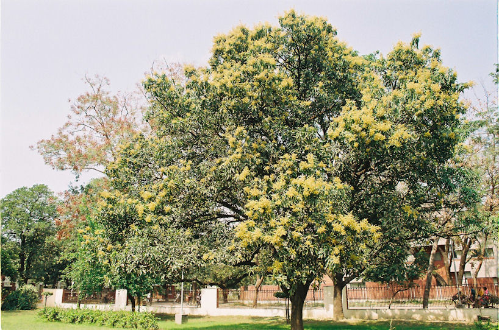

mailto:payer@payer.de
Zitierweise | cite as:
Payer, Alois <1944 - >: Sanskritkurs. -- 32. Lektion 32. -- Fassung vom 2009-01-05. -- URL: http://www.payer.de/sanskritkurs/lektion32.htm
Erstmals hier publiziert: 2008-12-26
Überarbeitungen: 2009-01-05 [Verbesserungen]
Anlass: Lehrveranstaltungen 1980 - 1984
©opyright: Dieser Text steht der Allgemeinheit zur Verfügung. Eine Verwertung in Publikationen, die über übliche Zitate hinausgeht, bedarf der ausdrücklichen Genehmigung des Verfassers
Dieser Text ist Teil der Abteilung Sanskrit von Tüpfli's Global Village Library
Falls Sie die diakritischen Zeichen nicht dargestellt bekommen, installieren Sie eine Schrift mit Diakritika wie z.B. Tahoma.
Die Devanāgarī-Zeichen sind in Unicode kodiert. Sie benötigen also eine Unicode-Devanāgarī-Schrift.
In der älteren Sanskritliteratur und von
den einheimischen Grammatikern werden die drei Tempora der
Vergangenheit in ihrem Gebrauch klar unterschieden:
In der klassischen Sanskritliteratur werden die drei Vergangenheitstempora ohne Bedeutungsunterschied gebraucht (Ausnahme: भारवि's Kunstgedicht किरातार्जुनीय) |
| Bildung: Augment a- + Präsensstamm + Sekundärendung Die drei Personen des Singular Parasmaipada Imperfekt werden bei athematischen Stämmen vom starken Präsensstamm gebildet, alle übrigen Formen vom schwachen Präsensstamm. Das Imperfekt hat nur den Indikativ. |
Beispiele:
भू 3. sg. Impf. P. अभवत् (a-bhava-t)
सु
- 3. sg. Impf. P. असुनोत् (a-suno-t)
- 3. pl. Impf. P. असुन्वन् (a + sunu + an)
| 1. Tritt das Augment a- vor eine vokalisch anlautende Wurzel, so verschmelzen das Augment un der Wurzelanlaut zur वृद्धि des Wurzelvokals. |
Beispiele:
3.sg.Impf.
3.pl.Impf इष् ऐच्छत्
(a- + iccha-t)इ ऐत्
(a- + e + t)आयन्
(a + i + an)आस् आस्त
(a + ās-ta)
| 2. Stehen Präverbe vor einer Wurzel, so tritt das Augment a- hinter die Präverbe unmittelbar vor die Wurzel. |
Beispiele:
3.sg.Impf. आगम् आगच्छत्
(ā + a + gaccha-t)संगम् समगच्छत्
(sam-a-gaccha-t)उपगम् उपागच्छत्
(upa + a + gaccha-t)उपागम् उपागच्छत्
(upa + ā + a +gaccha-t)
Um die Bildung der Formen zu demonstrieren, werden hier auch zu Parasmaipada-Wurzeln Ātmanepada-Formen gebildet! Diese künstlichen Formen stehen zwischen <>.
| Präsensklasse | Wurzel | 3. sg.P | 3.pl.P | 3.sg.Ā | 3.pl.Ā |
|---|---|---|---|---|---|
|
1. |
भू |
अभवत् |
अभवन् |
<अभवत> |
<अभवन्त> |
| 4. | नृत् | अनृत्यत् | अनृत्यन् | <अनृत्यत> | <अनृत्यन्त> |
| 6. | विश् | अविशत् | अविशन् | <अविशत> | <अविशन्त> |
| 10. und Kaus. | चुर् | अचोरयत् | अचोरयन् | अचोरयत | अचोरयन्त |
| Passiv | 3.sg.Passiv | 3.pl.Passiv | |||
| गम् | अगम्यत | अगम्यन्त |
| Präsensklasse | Wurzel | 3. sg.P | 3.pl.P | 3.sg.Ā | 3.pl.Ā |
|---|---|---|---|---|---|
|
2. |
द्विष् | अद्वेट् (adveṣṭ » adveṣ » adveṭ) |
अद्विषन् अद्विषुर् |
अद्विष्ट | अद्विषत |
| 2. | दुह् | अधोक् (a + doh +t » adogdh » adhok) |
अदुहन् | अदुग्ध | अदुहत |
| 2. | इ | ऐत् | आयन् | ||
| 2. | हन् | अहन् (aus *ahant) |
अघ्नन् | ||
| 2. | स्तु | अस्तौत् अस्तवीत् |
अस्तुवन् | अस्तुत | अस्तुवत |
| 2. | अस् | आसीत् | आसन् | ||
| 5. | सु | असुनोत् | असुन्वन् | असुनुत | असुन्वत |
| 5. | आप् | आप्नोत् | आप्नुवन् | <आप्नुत> | <आप्नुवत> |
| 8. | तन् | अतनोत् | अतन्वन् | अतनुत | अतन्वत |
| 8. | कृ | अकरोत् | अकुर्वन् | अकुरुत | अकुर्वत |
| 7. | युज् |
अयुनक् (a-yunaj + t » ayunakt » ayunak) |
अयुञ्जन् | अजुङ्क्त (a-yuñj + ta) |
अजुञ्जत |
| 7. | रुध् |
अरुणत् (a-ruṇadh + t » aruṇaddh » aruṇat) |
अरुन्धन् | अरुन्द्ध | अरुन्धत |
| 9. | क्री | अक्रीणात् (a-krīṇā-t) |
अक्रीणन् (a-krīṇ-an) |
अक्रीणीत (a-krīṇī-ta) |
अक्रीणत (a-krīṇ-ata) |
अग्र n.: Spitze, äußerstes Ende
मही f.: Erde, Grund und Boden (wörtl.: die Große)
एकदा
श्रम् श्राम्यते
श्रमिष्यते
श्रम्यते
श्रमयति
श्रान्त
श्रमित्वा । श्रान्त्वा
-श्रम्य
श्रमितुम्
पार्श्व
चूत

Abb.: चूतः
कानपुर, / کان پور
[Bildquelle: AmarChandra / Wikipedia. --
Creative Commons
Attribution ShareAlike 2.5 (Namensnennung, share alike)]
तरु वृक्ष
पचेलिम
स्पृहा
परम्
रुह् रोहति
रोक्ष्यति
रुह्यते
रोहयति । रोपयति
रूढ
-रुह्य
रोढुम्
ग्रह् गृह्णति
ग्रहीष्यति (!)
गृह्यते
ग्राहयति
गृहीत
-गृह्य
ग्रहीतुम् (!)
वानर कपि
Abb.: वानराः
Delhi = दहली
[Bildquelle: dewalt. --
http://www.flickr.com/photos/dewalt/389870377/. -- Zugriff am 2008-12-25. --


 Creative
Commons Lizenz (Namensnennung, keine kommerzielle Nutzung, share alike)]
Creative
Commons Lizenz (Namensnennung, keine kommerzielle Nutzung, share alike)]
लोक् लोकयति
लोकयिष्यति
लोक्यते
लोकित
-लोक्य
लोकितुम्
प्रहर्ष
कति
उपल
Abb.: उपलाः
"The boulders here are hard enough that the scavengers who have taken over the abandoned quarry south of downtown prefer not to strike them directly with their hammers.They heat the rocks first with flaming tires, scrap plastic, even old rubber boots so that the stones will fracture more easily. At dusk, when three or four blazes spew choking black clouds across the huge pit, the quarry looks like a woodcut out of Dante. At the mouth of this stone quarry in Pune Maharashtra, diminutive women in saris toil 14 hour shifts breaking boulders into cricket-ball sized chunks of stone. Sledgehammers cut through to the air to the sound of splintering stone. Just behind them roared large machines that chewed up stone only to spit out construction gravel. Almost everybodies face was smeared with a white dust. A dust, heavy and suffocating, floating in the air like mist covering everything."
[Bildquelle: lecercle. -- http://www.flickr.com/photos/lecercle/2304674715/in/set-72157604058089822/. -- Zugriff am 2008-12-25. --
Creative Commons Lizenz (Namensnennung, keine kommerzielle Nutzung, share alike)]
लक्ष्य
Abb.: लक्ष्यम्
Karnataka = ಕರ್ನಾಟಕ
[Bildquelle: mattlogelin. --
http://www.flickr.com/photos/mattlogelin/321235900/. -- Zugriff am
2008-12-25. --

 Creative
Commons Lizenz (Namensnennung, keine kommerzielle Bearbeitung)]
Creative
Commons Lizenz (Namensnennung, keine kommerzielle Bearbeitung)]
क्षिप् क्षिपति
क्षेप्स्यति
क्षिप्यते
क्षेपयति
क्षिप्त
-क्षिप्य
क्षेप्तुम्
चि चिनोति
चेष्यति
चीयते
चाययति
चित
-चित्य
चेतुम्
Abb.: चितं गोमयं दहति (गोमय n.: Kuhmist)
Rajasthan
[Bildquelle: thebigdurian. --
http://www.flickr.com/photos/thebigdurian/29862842/. -- Zugriff am
2008-12-25. --


 Creative
Commons Lizenz (Namensnennung, keine kommerzielle Nutzung, share alike)]
Creative
Commons Lizenz (Namensnennung, keine kommerzielle Nutzung, share alike)]
चि अव
प्रति
अहो
कौशल कुशल
Abb.: कौशलम्
Mehndi = मेहन्दी, Mumbai = मुंबई
[Bildquelle: the_gman. --
http://www.flickr.com/photos/thegman/2860162252/. -- Zugriff am 2008-12-25.
--


 Creative
Commons Lizenz (Namensnennung, keine kommerzielle Nutzung, share alike)]
Creative
Commons Lizenz (Namensnennung, keine kommerzielle Nutzung, share alike)]
A) Bestimmen Sie folgende Verbformen und bilden Sie die in Person, Zahl und Genus verbis entsprechenden Imperfektformen:
B) Übersetzen Sie und lösen Sie die Komposita in Sanskrit auf:
आसीत्क्षत्रिय उपपन्नो गुणैरिष्टै रूपवान् । स जनेन्द्राग्रे ऽतिष्ठत् । स देवानयजतारीनजयज्जनानपान्महापुण्यमकरोत् । तस्मान्मृत्वा देवलोके पुनर्भवमलभत ॥१॥
ब्राह्मणो महानगरे ऽवसत् । स पुत्रमागमय्यावक् । ब्राह्मणपुत्रो वेदं गुरावधीयीतेति । तच्छ्रुत्वा स पुत्रो ऽध्ययनाय गुरुमैत् । गुरुगृहे प्रविश्य गुरुमुपातिष्ठद्गुरुश्च तं पुत्रम् ब्राह्मणमपृच्छत् । ततस्तेन पुत्रेणान्नमादयत् ॥२॥
राम आचर्यमुपसंगम्य वचनमब्रवीत् ॥३॥
ब्राह्मणा वेदमध्यैयत चाध्यापयंश्च देवांश्चायजन्नयजन्त च क्षत्रियाः श्रुतिमध्यैयत जनानरक्षन्महीमभुञ्जन्देवानयजन्त वैश्या वेदमध्यैयत देवानयजन्ताक्रीणन्व्यक्रीणत च द्विजदासास्तु शूद्रा आसन् ॥४॥
बुद्धपुत्राः सत्यमजानन्दुःखमरुन्धन्मोक्षं प्राप्नुवन् । बुद्धपुत्र इति बुद्धमार्गभिक्षुरुच्यते ॥५॥
Abb.: बुद्धपुत्र इति बुद्धमार्गभिक्षुरुच्यते
Sri Lanka
[Bildquelle: Trollderella / Wikipedia. GNU FDLicense]
Anmerkung: ursprünglich wurde dieser an der Universität Tübingen jeweils im Wintersemester gehalten. Bei Lektion 32 begannen die zweiwöchigen Weihnachtsferien.
A) Bestimmen und übersetzen Sie folgende Wörter:
B) Übung zum Sandhi: Setzen Sie in folgenden Sätzen die Wörter in den Klammern ein. Achten Sie dabei besonders auf den Sandhi:
१. रामो ग्रामात् ... (द्वितीया विभक्तिः) ... गच्छति । (नगर । आर्यग्राम । महानगर । शत्रुग्राम । जयनगर । लोकेश्वरनगर । कविगृह )
२. जयन् ... (प्रथमा विभक्तिः) ... अरीन्हन्ति । (इन्द्रशत्रु । शत्रु । जितशत्रुक्षत्रिय । लोकेश्वर । तद्गुणशूर । देवता)
३. न हि पुण्यवन्तस्ते ... (प्रथमा विभक्तिः) ... । (अरि । आर्यशत्रु)
४. देवता ... (तृतीया विभक्तिः) ... आद्यते । (ऋषि (एकवचने बहुवचने च) । इन्द्रदेवी)
५.ब्राह्मणस् ... (सप्तमी विभक्तिरेकवचने बहुवचने च) ... एति । (नगर)
६. रामो गृहे ... । (आस् । इ । वस्)
७. शूरेण ... (प्रथमा विभक्तिः) ... जीयते । (अरि । इन्द्रशत्रु । उक्तानृतनर । एष नर)
८. कविना... (प्रथमा विभक्तिः) ... स्तूयन्ते । (आर्यदेव । इन्द्रादिदेव)
९. रामस् ... (द्वितीया विभक्तिः) ... गच्छति । (कवि । गृह । आर्यग्राम । अरिनगर । सुखता । तन्नगर । शूद्रग्राम । चन्द्रकीर्ति । ट्युबिङ्गन्नगर)
C) Übersetzen Sie ins Sanskrit:
1.) Nachdem der Sohn qeboren ist , schickt die Brahmanin einen Diener zum Brahmanen. Der Brahmane lässt diesen Diener ins Haus eintreten und fragt dann nach dem Sohn. Der Diener sagt, dass der Sohn wohlauf ist. Als er das qehört hat, wird der Brahmane glücklich.
2.) Der Heilige hat das (ihm) getane Böse ertragen.
3.) Sittlichkeit ist des Mannes Zier.
4.) Die mächtigen Krieger sind ins Brahmanendorf gegangen.
5.) Das Mädchen weint.
6.) Es gibt keine Krankheit gleich wie die Wohllust, es qibt keinen Feind wie die Verwirrung, es gibt kein Feuer wie den Zorn, es gibt kein Glück wie die Erkenntnis.
7.) Ein Mann, den die Göttin behütet, ist glücklich.
8.) Mit welchem Wind auch immer eine Wolke Wasser (वारि n.) lässt, mit dem Wind bewegt ein Gelehrter seinen Schirm.
9.) Es qibt keine fruchtbringenden Tätigkeiten von Ständen, Lebensstadien usw.
10) Der Kreislauf der Wiedergeburten hat keinen Anfang.
11) Es ist Zeit, sich dem Essen zu widmen.
12) Willkommen der Königin.
13) Um der Himmel Willen tun die Menschen Verdienstvolles.
14) Ein Mann, der aus Überheblichkeit, Gier, Zorn, oder Furcht ein Gerichtsurteil fälschlich spricht, qeht in eine Hölle.
15) Rāma ging auf Anweisung der Lehrers aus dem Dorf in die Stadt, betrat das Haus des heiligen Mannes, trat ehrerbietig vor den Heiligen und spricht: "Lass ab vom Zorn!"
16) Immer (sei seine) Verbindung mit solchen, die in den Wissenschaften gewachsen sind, auf dass seine Erziehunq/qutes Verhalten wachse. (Dies) weil die Erziehunq/gutes Verhalten als Wurzel dieses (die Verbindung mit solchen) hat.
17) Während der Lehrer steht, darf der Knabe nicht sitzen.
18) Es gibt keine bessere Zuflucht als Rāma.
19) Viṣṇumitra lässt den Rāma den Govinda ins Dorf schicken.
20) Er lässt den Devadatta Reis kochen.
21) Dharma der Arier ist, dass junge Brahmanen die Abschnitte des Veda und der Smṛti immer wieder studieren
22) Der Lehrer lehrte die Knaben den Veda und ging dann ins Haus.
23) Welches Amulett hat das Mädchen beschützt?
24) Wahrheit ist die Leuchte der Welt.
25) Wem gehören diese Häuser?
26) Dharma aller ist: Nichtverletzen, Wahrheit, Reinheit, Neidlosiqkeit, Nicht-Boshaftigkeit und Geduld:
27) Die Kṣatriyas, die die Feinde besiegt haben, sitzen im Haus.
28) Die ist eine (wirkliche) Gattin, die Liebes spricht; der aber ist ein (echter) Sohn, der lebt. Der lebt, der gute Eigenschaften besitzt; der lebt, der Dharma besitzt.
29) Der Götterfürst besiegt die Nichtarier, die Feinde des Indra sind. (Passiv)
30) Yoga der Tat sind Askese (tapas n.), (Veda)rezitation, Dienstfertigkeit qegenüber dem HERRN. Er dient der Entfaltung der meditativen Versenkung und der Schwächung der kleśas.
31) Nahrungsaufnahme, Schlaf, Furcht und Paarung: dies ist eine Gemeinsamkeit der Menschen mit den Tieren. Im Dharma (liegt) nämlich deren hinzukommende Besonderheit. Vom Dharma verlassen sind sie den Tieren (Instr.) gleich.
32) Die Leute werden geboren, um zu sterben.
33) Höllen sind wegen des Bösen. Das Böse hat als Ursprung Armut. Armut entsteht durch Nicht-Geben.
34) Es ist Dharma der Kṣatriyas, dass die Kṣatriyas die Leute vor den Feinden schützen.
35) Deshalb haben die drei (tisras) Wissenschaften das Regiment als Wurzel. Das Reqiment , das Erziehunq/qutes Verhalten als Wurzel hat, bringt den Lebewesen (प्राणभृत्) Gewinn und sicheren Besitz.
36) Böse Leute hören nicht (zu), wenn der Lehrer über den Dharma spricht.
37) Diesem Rāma sei Verehrunq!
38) Der hehre Hari ist mein Weq/Ziel, der (seine) Feinde in einen Himmel schickte, die Seinen den Sinn des Veda wissen ließ, den Göttern Unsterblichkeitsspeise zu essen qab, den Schöpfer (विधि) den Veda lehrte, die Erde im Wasser (fest )setzte.
39) Viṣṇu zeiqt sich seinen Gläubiqen.
40) Ein Reqiment, das nicht ausgeübt wird, bewirkt die Norm der Fische.
41) Wer Reichtümer besitzt, der hat Freunde: wer Reichtümer besitzt, der hat Verwandte; wer Reichtümer besitzt, der ist ein Mann (पुमान् Nom.sq.) in der Welt; wer Reichtümer besitzt, der ist nämlich ein Gelehrter.
42) Das Feuer, das den Verstorbenen verbrennt, verbrennt auch die qute Witwe.
43) Die Dienerin des Brahmanen hat die Speise qekocht und isst sie (nun).
44) Jetzt reicht's !
45) Diese Frucht reicht ihm zum Essen.
46) Der innerste Tempelschrein ist ein Haus für das Bildnis des Gottes.
47) Ein Dieb wird vom Diebstahl befreit durch Strafe oder durch Freilassung, Wenn aber der König (राजा Nom.sg.) den (Dieb) nicht bestraft, erhält er die Schuld des Diebes.
48) Weil er einen Fehler beim Opfer gemacht hat, ist der Brahmane nicht würdig, Reichtümer zu empfangen.
49) Wenn die Initiationszeremonie stattqefunden hat, soll er sich den Veda und die Philosophie von Gelehrten, die Ökonomie von Departementsvorstehern aneignen (उपयुज्).
50) Vaiśyadharma ist, dass die Vaiśyas von Kauf und Verkauf leben. Da es so ist, kaufen und verkaufen die Vaiśyasöhne.
51) Man soll die Wahrheit saqen, man soll Anqenehmes sagen; man soll nicht eine unanqenehrne Wahrheit saqen und man soll auch keine unangenehme Unwahrheit saqen. Dies ist der ewige Dharma.
52) Auf Wiedersehen!
Abb.: पुनर्दर्शनाय
[Bildquelle: dhyanji. --
http://www.flickr.com/photos/dhyanji/450566126/. -- Zugriff am 2008-12-26.
--


 Creative
Commons Lizenz (Namensnennung, keine kommerzielle Nutzung, keine Bearbeitung)]
Creative
Commons Lizenz (Namensnennung, keine kommerzielle Nutzung, keine Bearbeitung)]
Übersetzen und bestimmen Sie folgende Wortformen:
एकदा कश्चिद्वृद्धो ग्रामान्तरं गच्छन्पथि श्रान्तो ऽभवत् । अतः स विश्रमाय पार्श्वस्थितस्य चूततरोर्मूलमगच्छत् ॥ तस्मिन्वृक्षे पचेलिमानि फलान्यवर्तन्त । वृद्धस्य तेषु स्पृहा जाता । परं स वृक्षमारुह्य तानि ग्रहीतुं नाशक्नोत् ॥ दिष्ट्या तस्मिन् तरौ केचिद्वानराः फलानि खादन्तः स्थिताः । तानवलोक्य वृद्धः प्रहर्षं गतः । स किमकरोत् । स कतिचिदुपलानादाय वानरांल्लक्ष्यीकृत्य प्राक्षिपत् । वानराः कुपिताः कानिचित्फलान्यवचित्य वृद्धं प्रति प्राक्षिपन् । वृद्धः सहर्षं तान्यादाय स्वाभीष्टदेशं गतः ॥ अहो वृद्धस्य कौशलम् ॥ (aus: संस्कृतबालादर्श)
Erklärungen:
पथि Lok. sg. zu पथ् m. "Weg" (unregelmäßige Deklination)
लक्ष्यीकृ च्विऽ-षुffइx अन् लक्स्य + कृ : etwas zum लक्ष्य machen, was vorher nicht लक्ष्य war
आदाय Absolutiv zu आ-दा (3. Präsensklasse) "nehmen"
Abb.: तस्मिन्वृक्षे
पचेलिमानि फलान्यवर्तन्त
[Bildquelle: Wikipedia. GNU FDLicense]
Zu Lektion 33